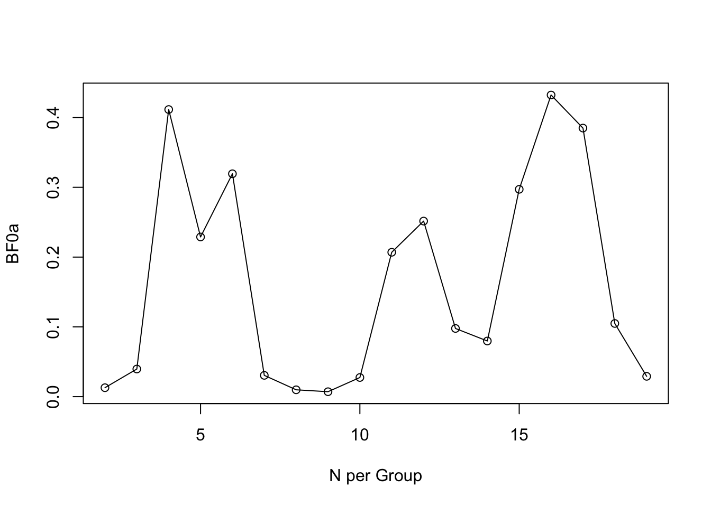
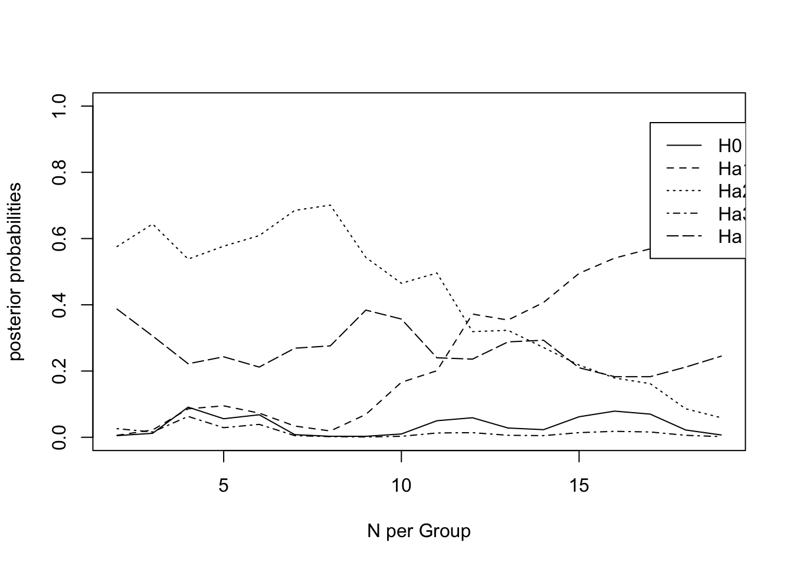

Last updated: 2018-05-04
Code version: fc4400b
library(dplyr)
library(data.table)
library(magrittr)
library(purrr)
library(here) # for tracking working directory
library(ggplot2)
library(epistats)
library(broom)
library(rjags)
library(Bain)Run tutorial from bain
# THIS IS BFTUTORIAL.R
# FURTHER EXPLANATION OF THE CODE USED TO RUN BAIN CAN BE FOUND IN THE APPENDIX
# OF A TUTORIAL ON TESTING HYPOTHESES USING THE BAYES FACTOR
#***************
#TUTORIAL STEP 1
#***************
# Load libraries. These libraries contain functions such as lm and Bain that will be used in
# this R code. Each time you reopen BFTutorial.R you have to execute this step.
library(MASS)
library(Bain)
library(psych)
#***************
#TUTORIAL STEP 2
#***************
# Read Data. If you open monin.txt and holbar.txt in a text editor, you can see
# that variable labels have been inserted between " " in the first line of the file
# (this is called a header).
monin<-read.table(here("data", "monin.txt"),header=TRUE)
monin$group<-factor(monin$group) # this command tells R that group is a factor
holubar<-read.table(here("data", "holubar.txt"),header=TRUE)
holubar$gr <- factor(holubar$gr) # this command tells R that gr is a factor
#***************
#TUTORIAL STEP 3
#***************
# Compute descriptives for the Monin data. The dependent variable name is attract,
# the factor name is group (see also TutorialStep 2).
descrip <- describeBy(monin$attract,monin$group,mat=TRUE)
print(descrip) item group1 vars n mean sd median trimmed mad
X11 1 1 1 19 1.88 1.38 1.7809531 1.868853001 0.8678414
X12 2 2 1 19 2.54 1.95 2.7114207 2.506671488 1.9312722
X13 3 3 1 29 0.02 2.38 0.4376782 -0.007711264 2.8969130
min max range skew kurtosis se
X11 -1.100922 5.050421 6.151343 0.20074159 0.1351877 0.3165937
X12 -1.099005 6.745590 7.844595 0.02372038 -0.5144330 0.4473607
X13 -3.911402 4.916406 8.827808 0.02759103 -1.0338883 0.4419549#***************
#TUTORIAL STEP 4
#***************
# Compute the Bayes factor for the Monin data.
# If you return to BFTutorial.R after closing it, you always have to rerun
# Steps 1 and 2, and lines 44-60.
prepmonin <- lm(attract~group-1, data=monin)
varm <- (summary(prepmonin)$sigma)**2
estm<-coef(prepmonin)
sampm<-table(monin$group)
cov1m <- varm/sampm[1]
cov2m <- varm/sampm[2]
cov3m <- varm/sampm[3]
cov1m <- matrix(cov1m,1,1)
cov2m <- matrix(cov2m,1,1)
cov3m <- matrix(cov3m,1,1)
covm<-list(cov1m,cov2m,cov3m)
ERr1<-matrix(c(1,-1,0,0,0,1,-1,0),nrow=2,ncol=4, byrow = TRUE)
IRr1<-matrix(0,0,0)
resmonin<-Bain(estimate=estm,Sigma=covm,grouppara=1,jointpara=0,n=sampm,ERr1,IRr1)Choice of b
J 2
N 19 19 29
b 0.035 0.035 0.023
Estimates and covariance matrix of parameters
Estimates
1.880 2.540 0.020
Posterior Covariance Matrix
0.215 0.000 0.000
0.000 0.215 0.000
0.000 0.000 0.141
Prior Covariance Matrix
6.125 0.000 0.000
0.000 6.125 0.000
0.000 0.000 6.125
Hypothesis testing result
f= f>|= c= c>|= f c BF.c PMPa PMPb
H1 0.000 1.000 0.015 1.000 0.000 0.015 0.001 1.000 0.001
Hu . . . . . . . . 0.999
BF-matrix
H1
H1 1.000
Add hypothesis of m1 > m2 > m3
# ERr2<-matrix(c(1,-1,0,0,
# 0,1,-1,0),nrow=2,ncol=4, byrow = TRUE)
ERr2<-matrix(0,0,0)
IRr2<-matrix(c(1,-1,0,0,
0,1,-1,0),nrow=2,ncol=4, byrow = TRUE)
resmonin2<-Bain(estimate=estm,Sigma=covm,grouppara=1,jointpara=0,n=sampm,ERr2,IRr2)Choice of b
J 2
N 19 19 29
b 0.035 0.035 0.023
Estimates and covariance matrix of parameters
Estimates
1.880 2.540 0.020
Posterior Covariance Matrix
0.215 0.000 0.000
0.000 0.215 0.000
0.000 0.000 0.141
Prior Covariance Matrix
6.125 0.000 0.000
0.000 6.125 0.000
0.000 0.000 6.125
Hypothesis testing result
f= f>|= c= c>|= f c BF.c PMPa PMPb
H1 1.000 0.156 1.000 0.168 0.156 0.168 0.921 1.000 0.483
Hu . . . . . . . . 0.517
BF-matrix
H1
H1 1.000
Back to hypothesis m1 = m2 = m3
Add 2 outliers such that H1 is supported
Check means
means <- monin %>%
group_by(group) %>%
summarize_at(vars(attract), funs(mean, n()))
means# A tibble: 3 x 3
group mean n
<fctr> <dbl> <int>
1 1 1.88 19
2 2 2.54 19
3 3 0.02 29means <- means$meanAdd outliers such that mean 1 and mean 2 are also 0.02
monin_outliers <- monin %>%
rbind(c(19 * (means[3] - means[1]), 1)) %>%
rbind(c(19 * (means[3] - means[2]), 2))
monin_outliers %>%
group_by(group) %>% summarize(mean(attract))# A tibble: 3 x 2
group `mean(attract)`
<fctr> <dbl>
1 1 0.019
2 2 0.019
3 3 0.020Prepare priors again with new data
prepmonin <- lm(attract~group-1, data=monin_outliers)
varm <- (summary(prepmonin)$sigma)**2
estm<-coef(prepmonin)
sampm<-table(monin$group)
cov1m <- varm/sampm[1]
cov2m <- varm/sampm[2]
cov3m <- varm/sampm[3]
cov1m <- matrix(cov1m,1,1)
cov2m <- matrix(cov2m,1,1)
cov3m <- matrix(cov3m,1,1)
covm<-list(cov1m,cov2m,cov3m)
ERr3 <- matrix(c(-1, 1, 0, 0,
0, -1, 1, 0),
ncol = 4, byrow = T)
IRr3 <- matrix(0,0,0)
resmonin<-Bain(estimate=estm,Sigma=covm,grouppara=1,jointpara=0,n=sampm,ERr3,IRr3)Choice of b
J 2
N 19 19 29
b 0.035 0.035 0.023
Estimates and covariance matrix of parameters
Estimates
0.019 0.019 0.020
Posterior Covariance Matrix
3.184 0.000 0.000
0.000 3.184 0.000
0.000 0.000 2.086
Prior Covariance Matrix
90.738 0.000 0.000
0.000 90.738 0.000
0.000 0.000 90.738
Hypothesis testing result
f= f>|= c= c>|= f c BF.c PMPa PMPb
H1 0.033 1.000 0.001 1.000 0.033 0.001 32.476 1.000 0.970
Hu . . . . . . . . 0.030
BF-matrix
H1
H1 1.000
Formulate hyoptheses:
Evaluate on other data
holubar %>%
group_by(gr) %>%
summarize_at(vars(at), funs(mean, n()))# A tibble: 3 x 3
gr mean n
<fctr> <dbl> <int>
1 1 0.98 20
2 2 0.02 27
3 3 0.27 28hol_lm <- lm(at ~ gr, data = holubar)
hol_var <- summary(hol_lm)$sigma^2
hol_estm <- coef(hol_lm)
hol_counts <- table(holubar$gr)
hol_vcov1 <- matrix(hol_var / hol_counts[1])
hol_vcov2 <- matrix(hol_var / hol_counts[2])
hol_vcov3 <- matrix(hol_var / hol_counts[3])
hol_vcovs <- list(hol_vcov1, hol_vcov2, hol_vcov3)
ERr1 <- matrix(c(1, -1, 0, 0), ncol = 4)
IRr1 <- matrix(c(1, 0, -1, 0), ncol = 4)
ERr2 <- matrix(0, 0, 0)
IRr2 <- matrix(c(-1, 1, 0, 0,
1, 0, -1, 0), ncol = 4, byrow = T)
ERr3 <- matrix(c(1, -1, 0, 0,
0, 1, -1, 0), ncol = 4, byrow = T)
IRr3 <- matrix(0, 0, 0)
res_hol <- Bain(estimate = hol_estm, Sigma = hol_vcovs,
grouppara = 1, jointpara = 0, n = hol_counts,
ERr1, IRr1, ERr2, IRr2, ERr3, IRr3)Choice of b
J 2
N 20 27 28
b 0.033 0.025 0.024
Estimates and covariance matrix of parameters
Estimates
0.980 -0.960 -0.710
Posterior Covariance Matrix
0.138 0.000 0.000
0.000 0.102 0.000
0.000 0.000 0.099
Prior Covariance Matrix
4.149 0.000 0.000
0.000 4.149 0.000
0.000 0.000 4.149
Hypothesis testing result
f= f>|= c= c>|= f c BF.c PMPa PMPb
H1 0.000 0.926 0.138 0.500 0.000 0.069 0.004 0.448 0.004
H2 1.000 0.000 1.000 0.168 0.000 0.168 0.000 0.021 0.000
H3 0.000 1.000 0.022 1.000 0.000 0.022 0.005 0.531 0.005
Hu . . . . . . . . 0.990
BF-matrix
H1 H2 H3
H1 1.000 21.394 0.843
H2 0.047 1.000 0.039
H3 1.186 25.370 1.000
#***************
#TUTORIAL STEP 5
#***************
# Compute the Bayes factor for "all" the hypotheses for the Monin data
# Note that estm, covm and sampm have already been computed in Step 4.
ERr1<-matrix(c(1,-1,0,0,
0,1,-1,0),nrow=2,ncol=4, byrow = TRUE)
IRr1<-matrix(0,0,0)
ERr2<-matrix(c(1,-1,0,0),nrow=1,ncol=4, byrow = TRUE)
IRr2<-matrix(0,0,0)
ERr3<-matrix(c(1,0,-1,0),nrow=1,ncol=4, byrow = TRUE)
IRr3<-matrix(0,0,0)
ERr4<-matrix(c(0,1,-1,0),nrow=1,ncol=4, byrow = TRUE)
IRr4<-matrix(0,0,0)
resmonin<-Bain(estimate=estm,Sigma=covm,grouppara=1,jointpara=0,n=sampm,ERr1,IRr1,ERr2,IRr2,ERr3,IRr3,ERr4,IRr4)Choice of b
J 2
N 19 19 29
b 0.035 0.035 0.023
Estimates and covariance matrix of parameters
Estimates
0.019 0.019 0.020
Posterior Covariance Matrix
3.184 0.000 0.000
0.000 3.184 0.000
0.000 0.000 2.086
Prior Covariance Matrix
90.738 0.000 0.000
0.000 90.738 0.000
0.000 0.000 90.738
Hypothesis testing result
f= f>|= c= c>|= f c BF.c PMPa PMPb
H1 0.033 1.000 0.001 1.000 0.033 0.001 32.476 0.655 0.642
H2 0.158 1.000 0.030 1.000 0.158 0.030 5.339 0.108 0.106
H3 0.174 1.000 0.030 1.000 0.174 0.030 5.868 0.118 0.116
H4 0.174 1.000 0.030 1.000 0.174 0.030 5.868 0.118 0.116
Hu . . . . . . . . 0.020
BF-matrix
H1 H2 H3 H4
H1 1.000 6.083 5.534 5.534
H2 0.164 1.000 0.910 0.910
H3 0.181 1.099 1.000 1.000
H4 0.181 1.099 1.000 1.000
#***************
#TUTORIAL STEP 6
#***************
# Bayesian updating. Stepwise increasing the sample size for the Monin data
# WARNING: INCREASE THE SIZE OF THE PLOT WINDOW IN THE LOWER RIGHT HAND SCREEN
# OTHERWISE YOU ARE BOUND TO RECEIVE AN ERROR MESSAGE
# create an object BFmonin in which the Bayes factor for different sample sizes
# will be collected.
BFmonin<-1
# start with an initial sample size of 2+0=2 persons per group an incease by 1
# until 2+17=19 persons per group
for (i in 0:17){
# collect the subset of persons selected in a matrix
subdata <- matrix(0, nrow = 6+3*i, ncol = 2) # in total 6 initial persons in 3 groups
# for which 2 variables have been recorded
subdata <- monin[c(1:(2+i),20:(21+i),39:(40+i)),1:2] # the first person in the first group is 1
# the first person in the second group is 20
# the first person in the third group is 39
submonin <- lm(attract~group-1, data=subdata)
subvarm <- (summary(submonin)$sigma)**2
subestm<-coef(submonin)
subsampm<-c(2+i,2+i,2+i)
subcov1m <- subvarm/subsampm[1]
subcov2m <- subvarm/subsampm[2]
subcov3m <- subvarm/subsampm[3]
subcov1m <- matrix(subcov1m,1,1)
subcov2m <- matrix(subcov2m,1,1)
subcov3m <- matrix(subcov3m,1,1)
subcovm<-list(subcov1m,subcov2m,subcov3m)
ERr1<-matrix(c(1,-1,0,0,0,1,-1,0),nrow=2,ncol=4, byrow = TRUE)
IRr1<-matrix(0,0,0)
resmonin<-Bain(estimate=subestm,Sigma=subcovm,grouppara=1,jointpara=0,n=subsampm,ERr1,IRr1,print = FALSE)
# collect BF0a from the object resmonin and store in BFmonin
BFmonin[1+i]<-resmonin[[4]][[3]]
}
# create a vector containing the sample size per group and plot this versus BF0a
NperGroup<-c(2,3,4,5,6,7,8,9,10,11,12,13,14,15,16,17,18,19)
plot(NperGroup,BFmonin,ylab="BF0a",xlab="N per Group")
lines(NperGroup,BFmonin)
Bayes factor keeps changing after addition of more participants
#***************
#TUTORIAL STEP 7
#***************
# Bayesian updating. Posterior Model Probabilities for the Holubar Data
# Create objects containing all 5 PMPs and each separate PMP
pall<-1
p1<-1
p2<-1
p3<-1
p4<-1
p5<-1
for (i in 0:17){
subdata <- matrix(0, nrow = 6+3*i, ncol = 2)
subdata <- monin[c(1:(2+i),20:(21+i),39:(40+i)),1:2]
submonin <- lm(attract~group-1, data=subdata)
subvar <- (summary(submonin)$sigma)**2
subest <-coef(submonin)
subsamp<-c(2+i,2+i,2+i)
subcov1 <- subvar/subsamp[1]
subcov2 <- subvar/subsamp[2]
subcov3 <- subvar/subsamp[3]
subcov1 <- matrix(subcov1,1,1)
subcov2 <- matrix(subcov2,1,1)
subcov3 <- matrix(subcov3,1,1)
subcov<-list(subcov1,subcov2,subcov3)
ERr1<-matrix(c(1,-1,0,0,
0,1,-1,0),nrow=2,ncol=4, byrow = TRUE)
IRr1<-matrix(0,0,0)
ERr2<-matrix(c(1,-1,0,0),nrow=1,ncol=4, byrow = TRUE)
IRr2<-matrix(0,0,0)
ERr3<-matrix(c(1,0,-1,0),nrow=1,ncol=4, byrow = TRUE)
IRr3<-matrix(0,0,0)
ERr4<-matrix(c(0,1,-1,0),nrow=1,ncol=4, byrow = TRUE)
IRr4<-matrix(0,0,0)
resmonin<-Bain(estimate=subest,Sigma=subcov,grouppara=1,jointpara=0,n=subsamp,ERr1,IRr1,ERr2,IRr2,ERr3,IRr3,ERr4,IRr4)
pall <- resmonin[[5]][[9]]
pall <- as.numeric(levels(pall))[pall]
p1[i+1]<-pall[1]
p2[i+1]<-pall[2]
p3[i+1]<-pall[3]
p4[i+1]<-pall[4]
p5[i+1]<-pall[5]
}Choice of b
J 2
N 2 2 2
b 0.333 0.333 0.333
Estimates and covariance matrix of parameters
Estimates
0.627 5.212 1.445
Posterior Covariance Matrix
1.096 0.000 0.000
0.000 1.096 0.000
0.000 0.000 1.096
Prior Covariance Matrix
3.288 0.000 0.000
0.000 3.288 0.000
0.000 0.000 3.288
Hypothesis testing result
f= f>|= c= c>|= f c BF.c PMPa PMPb
H1 0.000 1.000 0.028 1.000 0.000 0.028 0.013 0.008 0.005
H2 0.002 1.000 0.156 1.000 0.002 0.156 0.014 0.009 0.006
H3 0.231 1.000 0.156 1.000 0.231 0.156 1.487 0.940 0.576
H4 0.011 1.000 0.156 1.000 0.011 0.156 0.068 0.043 0.026
Hu . . . . . . . . 0.387
BF-matrix
H1 H2 H3 H4
H1 1.000 0.894 0.009 0.188
H2 1.118 1.000 0.010 0.211
H3 115.920 103.672 1.000 21.827
H4 5.311 4.750 0.046 1.000
Choice of b
J 2
N 3 3 3
b 0.222 0.222 0.222
Estimates and covariance matrix of parameters
Estimates
0.051 4.550 -0.180
Posterior Covariance Matrix
1.502 0.000 0.000
0.000 1.502 0.000
0.000 0.000 1.502
Prior Covariance Matrix
6.761 0.000 0.000
0.000 6.761 0.000
0.000 0.000 6.761
Hypothesis testing result
f= f>|= c= c>|= f c BF.c PMPa PMPb
H1 0.001 1.000 0.014 1.000 0.001 0.014 0.040 0.017 0.012
H2 0.008 1.000 0.108 1.000 0.008 0.108 0.073 0.032 0.022
H3 0.228 1.000 0.108 1.000 0.228 0.108 2.103 0.928 0.644
H4 0.006 1.000 0.108 1.000 0.006 0.108 0.051 0.023 0.016
Hu . . . . . . . . 0.306
BF-matrix
H1 H2 H3 H4
H1 1.000 0.542 0.019 0.773
H2 1.846 1.000 0.035 1.426
H3 53.095 28.755 1.000 41.019
H4 1.294 0.701 0.024 1.000
Choice of b
J 2
N 4 4 4
b 0.167 0.167 0.167
Estimates and covariance matrix of parameters
Estimates
0.484 3.506 0.239
Posterior Covariance Matrix
1.236 0.000 0.000
0.000 1.236 0.000
0.000 0.000 1.236
Prior Covariance Matrix
7.413 0.000 0.000
0.000 7.413 0.000
0.000 0.000 7.413
Hypothesis testing result
f= f>|= c= c>|= f c BF.c PMPa PMPb
H1 0.005 1.000 0.012 1.000 0.005 0.012 0.411 0.118 0.091
H2 0.040 1.000 0.104 1.000 0.040 0.104 0.386 0.110 0.086
H3 0.251 1.000 0.104 1.000 0.251 0.104 2.420 0.691 0.538
H4 0.029 1.000 0.104 1.000 0.029 0.104 0.283 0.081 0.063
Hu . . . . . . . . 0.222
BF-matrix
H1 H2 H3 H4
H1 1.000 1.066 0.170 1.456
H2 0.938 1.000 0.159 1.365
H3 5.881 6.271 1.000 8.562
H4 0.687 0.732 0.117 1.000
Choice of b
J 2
N 5 5 5
b 0.133 0.133 0.133
Estimates and covariance matrix of parameters
Estimates
0.760 3.250 0.085
Posterior Covariance Matrix
0.796 0.000 0.000
0.000 0.796 0.000
0.000 0.000 0.796
Prior Covariance Matrix
5.974 0.000 0.000
0.000 5.974 0.000
0.000 0.000 5.974
Hypothesis testing result
f= f>|= c= c>|= f c BF.c PMPa PMPb
H1 0.004 1.000 0.015 1.000 0.004 0.015 0.229 0.074 0.056
H2 0.045 1.000 0.115 1.000 0.045 0.115 0.391 0.126 0.095
H3 0.274 1.000 0.115 1.000 0.274 0.115 2.373 0.763 0.577
H4 0.014 1.000 0.115 1.000 0.014 0.115 0.118 0.038 0.029
Hu . . . . . . . . 0.243
BF-matrix
H1 H2 H3 H4
H1 1.000 0.585 0.096 1.940
H2 1.709 1.000 0.165 3.316
H3 10.370 6.068 1.000 20.123
H4 0.515 0.302 0.050 1.000
Choice of b
J 2
N 6 6 6
b 0.111 0.111 0.111
Estimates and covariance matrix of parameters
Estimates
0.821 3.098 0.506
Posterior Covariance Matrix
0.599 0.000 0.000
0.000 0.599 0.000
0.000 0.000 0.599
Prior Covariance Matrix
5.392 0.000 0.000
0.000 5.392 0.000
0.000 0.000 5.392
Hypothesis testing result
f= f>|= c= c>|= f c BF.c PMPa PMPb
H1 0.005 1.000 0.017 1.000 0.005 0.017 0.319 0.086 0.068
H2 0.042 1.000 0.121 1.000 0.042 0.121 0.345 0.093 0.073
H3 0.350 1.000 0.121 1.000 0.350 0.121 2.879 0.773 0.609
H4 0.022 1.000 0.121 1.000 0.022 0.121 0.182 0.049 0.039
Hu . . . . . . . . 0.212
BF-matrix
H1 H2 H3 H4
H1 1.000 0.927 0.111 1.755
H2 1.079 1.000 0.120 1.894
H3 9.013 8.354 1.000 15.820
H4 0.570 0.528 0.063 1.000
Choice of b
J 2
N 7 7 7
b 0.095 0.095 0.095
Estimates and covariance matrix of parameters
Estimates
0.798 3.371 0.098
Posterior Covariance Matrix
0.508 0.000 0.000
0.000 0.508 0.000
0.000 0.000 0.508
Prior Covariance Matrix
5.339 0.000 0.000
0.000 5.339 0.000
0.000 0.000 5.339
Hypothesis testing result
f= f>|= c= c>|= f c BF.c PMPa PMPb
H1 0.001 1.000 0.017 1.000 0.001 0.017 0.031 0.011 0.008
H2 0.015 1.000 0.122 1.000 0.015 0.122 0.125 0.046 0.034
H3 0.311 1.000 0.122 1.000 0.311 0.122 2.548 0.937 0.685
H4 0.002 1.000 0.122 1.000 0.002 0.122 0.017 0.006 0.005
Hu . . . . . . . . 0.269
BF-matrix
H1 H2 H3 H4
H1 1.000 0.244 0.012 1.823
H2 4.095 1.000 0.049 7.463
H3 83.469 20.385 1.000 152.133
H4 0.549 0.134 0.007 1.000
Choice of b
J 2
N 8 8 8
b 0.083 0.083 0.083
Estimates and covariance matrix of parameters
Estimates
0.918 3.396 0.222
Posterior Covariance Matrix
0.391 0.000 0.000
0.000 0.391 0.000
0.000 0.000 0.391
Prior Covariance Matrix
4.698 0.000 0.000
0.000 4.698 0.000
0.000 0.000 4.698
Hypothesis testing result
f= f>|= c= c>|= f c BF.c PMPa PMPb
H1 0.000 1.000 0.020 1.000 0.000 0.020 0.010 0.004 0.003
H2 0.009 1.000 0.130 1.000 0.009 0.130 0.069 0.026 0.019
H3 0.331 1.000 0.130 1.000 0.331 0.130 2.543 0.968 0.701
H4 0.001 1.000 0.130 1.000 0.001 0.130 0.006 0.002 0.002
Hu . . . . . . . . 0.276
BF-matrix
H1 H2 H3 H4
H1 1.000 0.143 0.004 1.762
H2 6.989 1.000 0.027 12.317
H3 258.596 37.000 1.000 455.730
H4 0.567 0.081 0.002 1.000
Choice of b
J 2
N 9 9 9
b 0.074 0.074 0.074
Estimates and covariance matrix of parameters
Estimates
1.377 3.519 0.171
Posterior Covariance Matrix
0.381 0.000 0.000
0.000 0.381 0.000
0.000 0.000 0.381
Prior Covariance Matrix
5.139 0.000 0.000
0.000 5.139 0.000
0.000 0.000 5.139
Hypothesis testing result
f= f>|= c= c>|= f c BF.c PMPa PMPb
H1 0.000 1.000 0.018 1.000 0.000 0.018 0.007 0.004 0.003
H2 0.022 1.000 0.124 1.000 0.022 0.124 0.181 0.113 0.069
H3 0.176 1.000 0.124 1.000 0.176 0.124 1.414 0.882 0.543
H4 0.000 1.000 0.124 1.000 0.000 0.124 0.002 0.001 0.001
Hu . . . . . . . . 0.384
BF-matrix
H1 H2 H3 H4
H1 1.000 0.039 0.005 3.033
H2 25.456 1.000 0.128 77.207
H3 199.281 7.829 1.000 604.412
H4 0.330 0.013 0.002 1.000
Choice of b
J 2
N 10 10 10
b 0.067 0.067 0.067
Estimates and covariance matrix of parameters
Estimates
1.372 3.117 0.121
Posterior Covariance Matrix
0.359 0.000 0.000
0.000 0.359 0.000
0.000 0.000 0.359
Prior Covariance Matrix
5.390 0.000 0.000
0.000 5.390 0.000
0.000 0.000 5.390
Hypothesis testing result
f= f>|= c= c>|= f c BF.c PMPa PMPb
H1 0.000 1.000 0.017 1.000 0.000 0.017 0.027 0.015 0.010
H2 0.057 1.000 0.122 1.000 0.057 0.122 0.466 0.258 0.166
H3 0.158 1.000 0.122 1.000 0.158 0.122 1.302 0.722 0.465
H4 0.001 1.000 0.122 1.000 0.001 0.122 0.008 0.004 0.003
Hu . . . . . . . . 0.357
BF-matrix
H1 H2 H3 H4
H1 1.000 0.059 0.021 3.661
H2 16.966 1.000 0.358 62.109
H3 47.425 2.795 1.000 173.608
H4 0.273 0.016 0.006 1.000
Choice of b
J 2
N 11 11 11
b 0.061 0.061 0.061
Estimates and covariance matrix of parameters
Estimates
1.554 3.080 0.557
Posterior Covariance Matrix
0.369 0.000 0.000
0.000 0.369 0.000
0.000 0.000 0.369
Prior Covariance Matrix
6.086 0.000 0.000
0.000 6.086 0.000
0.000 0.000 6.086
Hypothesis testing result
f= f>|= c= c>|= f c BF.c PMPa PMPb
H1 0.003 1.000 0.015 1.000 0.003 0.015 0.207 0.065 0.050
H2 0.096 1.000 0.114 1.000 0.096 0.114 0.839 0.265 0.201
H3 0.237 1.000 0.114 1.000 0.237 0.114 2.068 0.653 0.496
H4 0.006 1.000 0.114 1.000 0.006 0.114 0.054 0.017 0.013
Hu . . . . . . . . 0.240
BF-matrix
H1 H2 H3 H4
H1 1.000 0.247 0.100 3.814
H2 4.054 1.000 0.406 15.465
H3 9.997 2.466 1.000 38.132
H4 0.262 0.065 0.026 1.000
Choice of b
J 2
N 12 12 12
b 0.056 0.056 0.056
Estimates and covariance matrix of parameters
Estimates
1.701 2.853 0.462
Posterior Covariance Matrix
0.335 0.000 0.000
0.000 0.335 0.000
0.000 0.000 0.335
Prior Covariance Matrix
6.024 0.000 0.000
0.000 6.024 0.000
0.000 0.000 6.024
Hypothesis testing result
f= f>|= c= c>|= f c BF.c PMPa PMPb
H1 0.004 1.000 0.015 1.000 0.004 0.015 0.252 0.078 0.059
H2 0.181 1.000 0.115 1.000 0.181 0.115 1.574 0.487 0.372
H3 0.155 1.000 0.115 1.000 0.155 0.115 1.350 0.417 0.319
H4 0.007 1.000 0.115 1.000 0.007 0.115 0.059 0.018 0.014
Hu . . . . . . . . 0.236
BF-matrix
H1 H2 H3 H4
H1 1.000 0.160 0.186 4.235
H2 6.255 1.000 1.166 26.491
H3 5.364 0.857 1.000 22.716
H4 0.236 0.038 0.044 1.000
Choice of b
J 2
N 13 13 13
b 0.051 0.051 0.051
Estimates and covariance matrix of parameters
Estimates
1.734 2.945 0.481
Posterior Covariance Matrix
0.286 0.000 0.000
0.000 0.286 0.000
0.000 0.000 0.286
Prior Covariance Matrix
5.586 0.000 0.000
0.000 5.586 0.000
0.000 0.000 5.586
Hypothesis testing result
f= f>|= c= c>|= f c BF.c PMPa PMPb
H1 0.002 1.000 0.016 1.000 0.002 0.016 0.098 0.040 0.028
H2 0.147 1.000 0.119 1.000 0.147 0.119 1.229 0.497 0.354
H3 0.134 1.000 0.119 1.000 0.134 0.119 1.123 0.454 0.323
H4 0.003 1.000 0.119 1.000 0.003 0.119 0.022 0.009 0.006
Hu . . . . . . . . 0.288
BF-matrix
H1 H2 H3 H4
H1 1.000 0.080 0.087 4.414
H2 12.572 1.000 1.094 55.487
H3 11.490 0.914 1.000 50.713
H4 0.227 0.018 0.020 1.000
Choice of b
J 2
N 14 14 14
b 0.048 0.048 0.048
Estimates and covariance matrix of parameters
Estimates
1.743 2.835 0.478
Posterior Covariance Matrix
0.250 0.000 0.000
0.000 0.250 0.000
0.000 0.000 0.250
Prior Covariance Matrix
5.242 0.000 0.000
0.000 5.242 0.000
0.000 0.000 5.242
Hypothesis testing result
f= f>|= c= c>|= f c BF.c PMPa PMPb
H1 0.001 1.000 0.018 1.000 0.001 0.018 0.080 0.033 0.023
H2 0.171 1.000 0.123 1.000 0.171 0.123 1.386 0.576 0.407
H3 0.114 1.000 0.123 1.000 0.114 0.123 0.924 0.384 0.271
H4 0.002 1.000 0.123 1.000 0.002 0.123 0.018 0.007 0.005
Hu . . . . . . . . 0.293
BF-matrix
H1 H2 H3 H4
H1 1.000 0.058 0.086 4.538
H2 17.382 1.000 1.500 78.876
H3 11.588 0.667 1.000 52.583
H4 0.220 0.013 0.019 1.000
Choice of b
J 2
N 15 15 15
b 0.044 0.044 0.044
Estimates and covariance matrix of parameters
Estimates
1.753 2.573 0.544
Posterior Covariance Matrix
0.241 0.000 0.000
0.000 0.241 0.000
0.000 0.000 0.241
Prior Covariance Matrix
5.416 0.000 0.000
0.000 5.416 0.000
0.000 0.000 5.416
Hypothesis testing result
f= f>|= c= c>|= f c BF.c PMPa PMPb
H1 0.005 1.000 0.017 1.000 0.005 0.017 0.297 0.079 0.062
H2 0.286 1.000 0.121 1.000 0.286 0.121 2.359 0.627 0.495
H3 0.126 1.000 0.121 1.000 0.126 0.121 1.040 0.277 0.218
H4 0.008 1.000 0.121 1.000 0.008 0.121 0.066 0.018 0.014
Hu . . . . . . . . 0.210
BF-matrix
H1 H2 H3 H4
H1 1.000 0.126 0.286 4.502
H2 7.938 1.000 2.267 35.736
H3 3.502 0.441 1.000 15.765
H4 0.222 0.028 0.063 1.000
Choice of b
J 2
N 16 16 16
b 0.042 0.042 0.042
Estimates and covariance matrix of parameters
Estimates
1.877 2.546 0.681
Posterior Covariance Matrix
0.222 0.000 0.000
0.000 0.222 0.000
0.000 0.000 0.222
Prior Covariance Matrix
5.334 0.000 0.000
0.000 5.334 0.000
0.000 0.000 5.334
Hypothesis testing result
f= f>|= c= c>|= f c BF.c PMPa PMPb
H1 0.007 1.000 0.017 1.000 0.007 0.017 0.432 0.097 0.079
H2 0.362 1.000 0.122 1.000 0.362 0.122 2.962 0.662 0.541
H3 0.120 1.000 0.122 1.000 0.120 0.122 0.980 0.219 0.179
H4 0.012 1.000 0.122 1.000 0.012 0.122 0.098 0.022 0.018
Hu . . . . . . . . 0.183
BF-matrix
H1 H2 H3 H4
H1 1.000 0.146 0.441 4.414
H2 6.853 1.000 3.024 30.246
H3 2.266 0.331 1.000 10.002
H4 0.227 0.033 0.100 1.000
Choice of b
J 2
N 17 17 17
b 0.039 0.039 0.039
Estimates and covariance matrix of parameters
Estimates
1.854 2.473 0.679
Posterior Covariance Matrix
0.198 0.000 0.000
0.000 0.198 0.000
0.000 0.000 0.198
Prior Covariance Matrix
5.050 0.000 0.000
0.000 5.050 0.000
0.000 0.000 5.050
Hypothesis testing result
f= f>|= c= c>|= f c BF.c PMPa PMPb
H1 0.007 1.000 0.018 1.000 0.007 0.018 0.385 0.086 0.070
H2 0.391 1.000 0.126 1.000 0.391 0.126 3.111 0.696 0.569
H3 0.111 1.000 0.126 1.000 0.111 0.126 0.884 0.198 0.162
H4 0.011 1.000 0.126 1.000 0.011 0.126 0.087 0.019 0.016
Hu . . . . . . . . 0.183
BF-matrix
H1 H2 H3 H4
H1 1.000 0.124 0.435 4.435
H2 8.084 1.000 3.519 35.853
H3 2.298 0.284 1.000 10.189
H4 0.225 0.028 0.098 1.000
Choice of b
J 2
N 18 18 18
b 0.037 0.037 0.037
Estimates and covariance matrix of parameters
Estimates
1.909 2.510 0.538
Posterior Covariance Matrix
0.184 0.000 0.000
0.000 0.184 0.000
0.000 0.000 0.184
Prior Covariance Matrix
4.972 0.000 0.000
0.000 4.972 0.000
0.000 0.000 4.972
Hypothesis testing result
f= f>|= c= c>|= f c BF.c PMPa PMPb
H1 0.002 1.000 0.018 1.000 0.002 0.018 0.105 0.028 0.022
H2 0.402 1.000 0.127 1.000 0.402 0.127 3.179 0.856 0.674
H3 0.051 1.000 0.127 1.000 0.051 0.127 0.405 0.109 0.086
H4 0.003 1.000 0.127 1.000 0.003 0.127 0.026 0.007 0.006
Hu . . . . . . . . 0.212
BF-matrix
H1 H2 H3 H4
H1 1.000 0.033 0.259 3.975
H2 30.312 1.000 7.851 120.489
H3 3.861 0.127 1.000 15.348
H4 0.252 0.008 0.065 1.000
Choice of b
J 2
N 19 19 19
b 0.035 0.035 0.035
Estimates and covariance matrix of parameters
Estimates
1.880 2.540 0.430
Posterior Covariance Matrix
0.169 0.000 0.000
0.000 0.169 0.000
0.000 0.000 0.169
Prior Covariance Matrix
4.823 0.000 0.000
0.000 4.823 0.000
0.000 0.000 4.823
Hypothesis testing result
f= f>|= c= c>|= f c BF.c PMPa PMPb
H1 0.001 1.000 0.019 1.000 0.001 0.019 0.029 0.009 0.007
H2 0.360 1.000 0.128 1.000 0.360 0.128 2.805 0.911 0.687
H3 0.031 1.000 0.128 1.000 0.031 0.128 0.239 0.078 0.059
H4 0.001 1.000 0.128 1.000 0.001 0.128 0.007 0.002 0.002
Hu . . . . . . . . 0.245
BF-matrix
H1 H2 H3 H4
H1 1.000 0.010 0.122 3.925
H2 96.349 1.000 11.750 378.174
H3 8.200 0.085 1.000 32.186
H4 0.255 0.003 0.031 1.000
NperGroup<-c(2,3,4,5,6,7,8,9,10,11,12,13,14,15,16,17,18,19)
# create a legenda for the plot
leg <- c("H0","Ha1","Ha2","Ha3","Ha")
# give each line a different appearance
lty <- c(1,2,3,4,5)
plot(NperGroup,p1,type = "l",ylab = "posterior probabilities",xlab="N per Group",ylim=(0:1.0))
lines(NperGroup,p2,lty=2)
lines(NperGroup,p3,lty=3)
lines(NperGroup,p4,lty=4)
lines(NperGroup,p5,lty=5)
legend(x = 17, y = 0.95,legend = leg, lty =lty)
sessionInfo()R version 3.3.2 (2016-10-31)
Platform: x86_64-apple-darwin13.4.0 (64-bit)
Running under: macOS Sierra 10.12.6
locale:
[1] en_US.UTF-8/en_US.UTF-8/en_US.UTF-8/C/en_US.UTF-8/en_US.UTF-8
attached base packages:
[1] stats graphics grDevices utils datasets methods base
other attached packages:
[1] psych_1.7.5 MASS_7.3-47 Bain_0.1.0
[4] rjags_4-6 coda_0.19-1 broom_0.4.2
[7] epistats_0.1.0 ggplot2_2.2.1 here_0.1
[10] purrr_0.2.4 magrittr_1.5 data.table_1.10.4
[13] dplyr_0.7.4
loaded via a namespace (and not attached):
[1] Rcpp_0.12.14 git2r_0.20.0 plyr_1.8.4 bindr_0.1
[5] class_7.3-14 tools_3.3.2 digest_0.6.13 evaluate_0.10.1
[9] tibble_1.3.4 gtable_0.2.0 nlme_3.1-131 lattice_0.20-35
[13] pkgconfig_2.0.1 rlang_0.1.6 yaml_2.1.16 parallel_3.3.2
[17] mvtnorm_1.0-6 bindrcpp_0.2 e1071_1.6-8 stringr_1.2.0
[21] knitr_1.18 rprojroot_1.2 grid_3.3.2 glue_1.2.0
[25] R6_2.2.2 foreign_0.8-69 rmarkdown_1.8 tidyr_0.7.2
[29] reshape2_1.4.2 backports_1.1.0 scales_0.4.1 htmltools_0.3.6
[33] assertthat_0.2.0 mnormt_1.5-5 fungible_1.5 colorspace_1.3-2
[37] nleqslv_3.3.1 stringi_1.1.6 lazyeval_0.2.0 munsell_0.4.3 This R Markdown site was created with workflowr